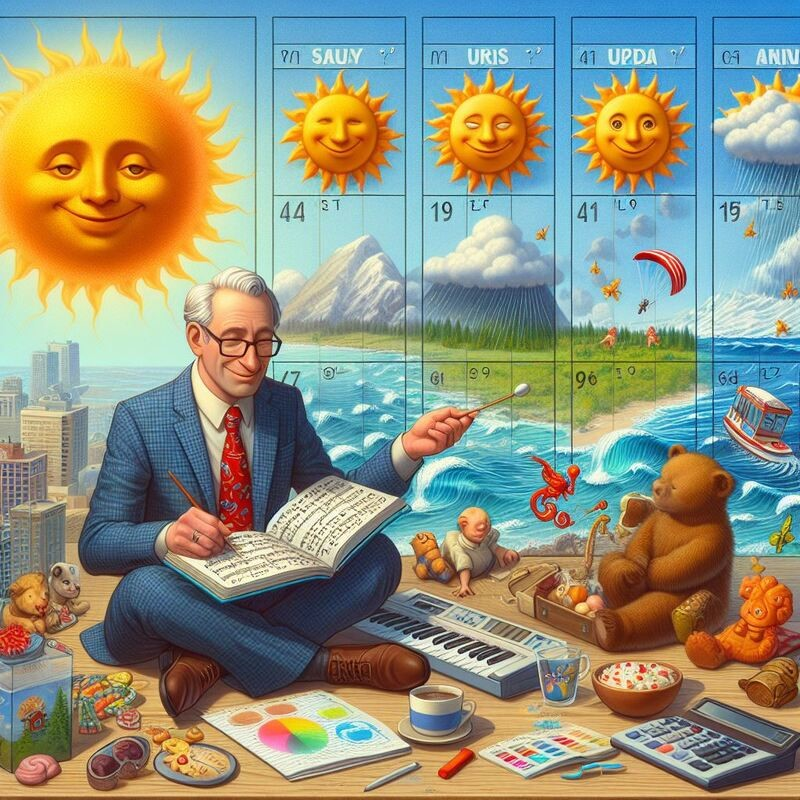

Ready to Unleash Your Meteorological Passion?
The UW Dawgcast is a unique opportunity for students to gain real-world experience in broadcast meteorology.
- Learn from experienced meteorologists and broadcasters
- Practice forecasting and on-air presentation skills
- Use professional-grade equipment and software
- Collaborate with fellow weather enthusiasts
- Participate in exciting field trips and events
Don't miss out on this incredible experience! Join The UW Dawgcast today and take your passion for weather to new heights.
About The UW Dawgcast
The UW Dawgcast is a student-led organization at the University of Washington dedicated to providing accurate weather forecasts and promoting interest in meteorology among students.
We aim to foster a community of weather enthusiasts who are passionate about learning and sharing their knowledge with others.
Meteorology
The UW Dawgcast operates in collaboration with the academic course ATM S 493: Media & Meteorology. This course offers students the opportunity to learn about broadcast meteorology and gain hands-on experience in communicating weather information to the public.
Through engaging lectures, practical exercises, and guest speaker sessions, students develop the skills and confidence needed to excel in the field of meteorology and broadcasting.
Join The UW Dawgcast Club
Whether you're a meteorology major or simply have a passion for weather, The UW Dawgcast welcomes students from all backgrounds to join our club!
As a member, you'll have the opportunity to participate in forecasting activities, attend guest lectures, and connect with like-minded individuals who share your enthusiasm for meteorology.
Join Now5-Day Forecast
Stay tuned for the latest weather updates from The UW Dawgcast!